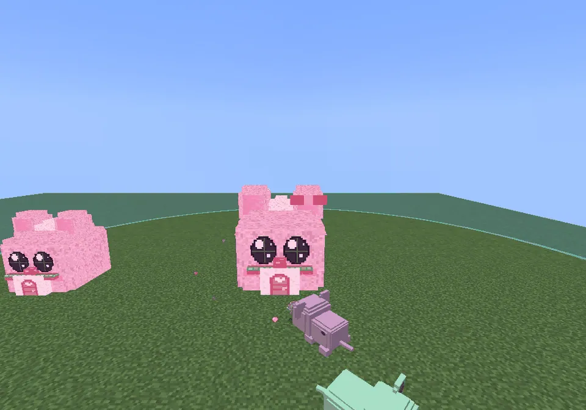
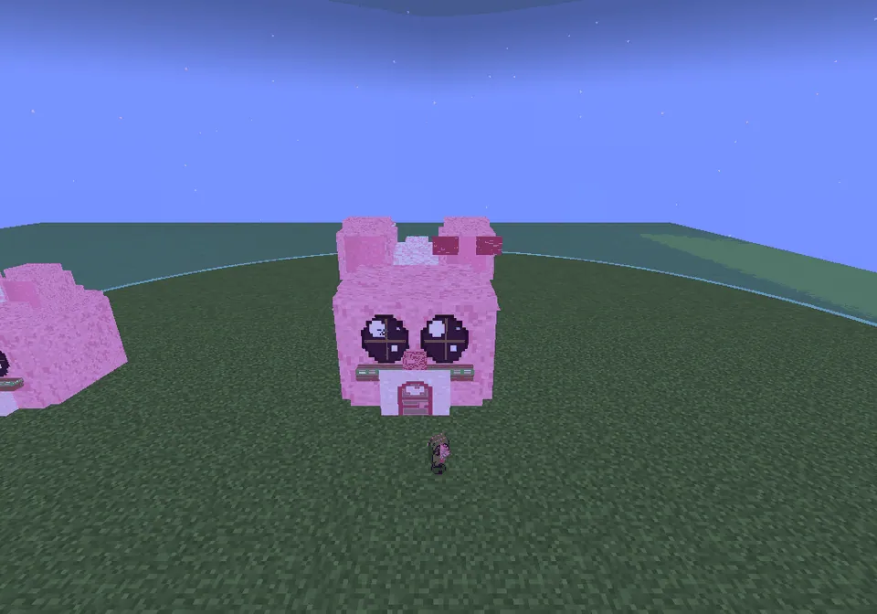
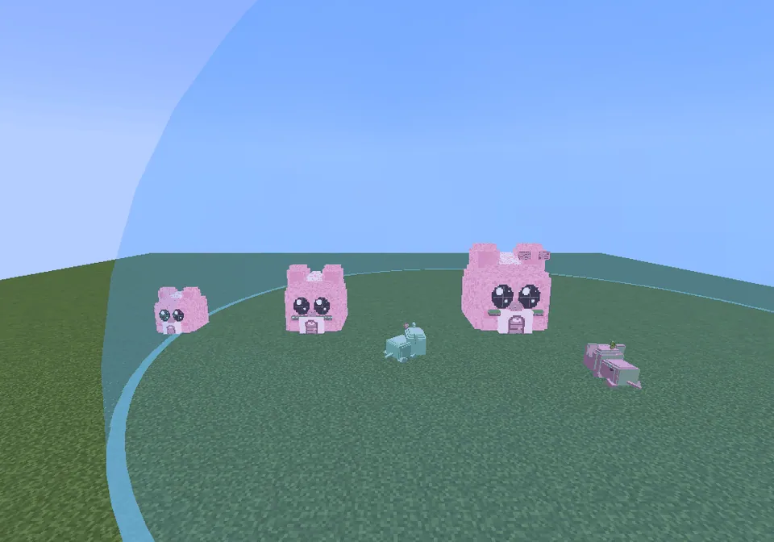
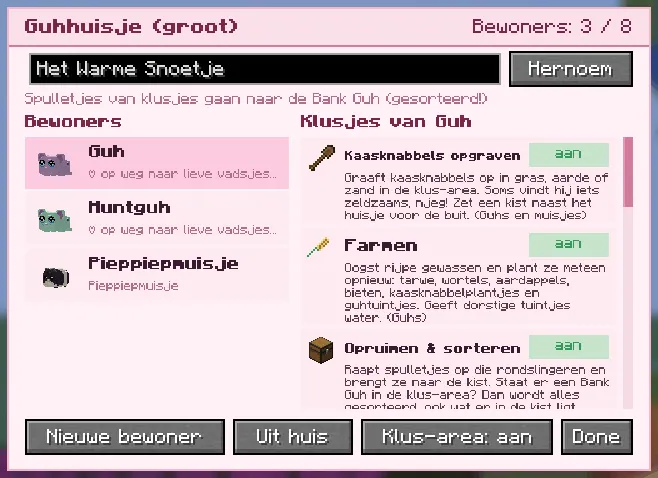
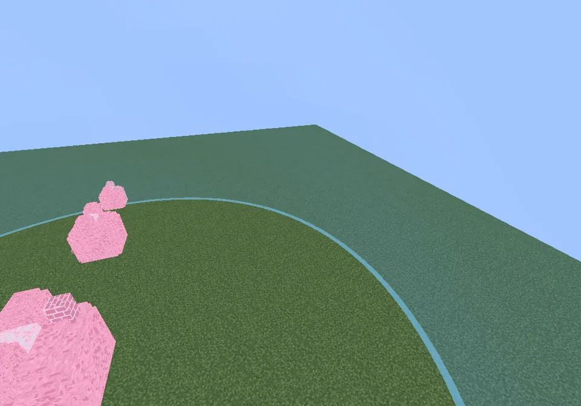
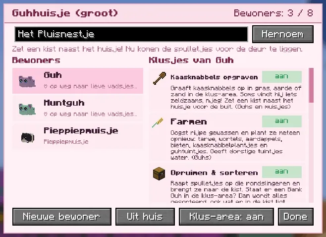

A little house shaped like a guh head, in three sizes: your guhs live there, sleep there at night and do chores in the day.
Een huisje in de vorm van een guhhoofd, in drie maten: daar wonen je guhs, slapen ze 's nachts en doen ze overdag klusjes.
A little house shaped like a guh headEen huisje in de vorm van een guhhoofd
A Guhhuisje is a guh head you can live in: the round ears are the roof (with pink insides and a pluis tuft), the two big shiny eyes are the windows and the snoet is the door (an arched door with a heart knob, a little nose and blush). It is guh-style through and through, not a hamster house! There are three sizes: klein (2×2×2, 3 residents), medium (3×3×3, 5 residents, flower boxes under the eyes) and groot (4×4×4, 8 residents, a pink chimney and a bow on its ear: Villa Vahoeg!). You craft the next size from the one before.
Een Guhhuisje is een guhhoofd waar je in kunt wonen: de ronde oortjes zijn het dak (roze vanbinnen, met een plukje pluis), de twee grote glimmende ogen zijn de raampjes en de snoet is de deur (een boogdeurtje met een hartjesknop, een neusje en blosjes). Helemaal guh-stijl, geen hamsterhuisje! Er zijn drie maten: klein (2×2×2, 3 bewoners), medium (3×3×3, 5 bewoners, bloembakjes onder de oogjes) en groot (4×4×4, 8 bewoners, een roze schoorsteentje en een strik op het oor: Villa Vahoeg!). De volgende maat maak je van de vorige.
- ResidentsBewoners
- 3 / 5 / 8
- Home baseThuisgebied
- 16 blocks16 blokken
- WhoWie
- tamed guhs, pieppiepmuisjes, Schilly, Poepschillytamme guhs, pieppiepmuisjes, Schilly, Poepschilly

Groot, with residentsGroot, met bewoners
A resident walks home.Een bewoner loopt naar huis.

At night's Nachts
Everyone inside, lights in the eyes. Zzz...Iedereen binnen, licht in de oogjes. Zzz...

Three sizesDrie maten
Klein, medium and groot in a row.Klein, medium en groot op een rij.
Het Guhhuisje
- Moving in: right-click the huisje with a picked-up guh or maatje, or press Nieuwe bewoner in its screen (your own tamed guhs and maatjes within 16 blocks). Every huisje gets its own unique cute name (Het Warme Snoetje, Het Pluisnestje...), and you can rename it.Erin wonen: rechtsklik het huisje met een opgepakte guh of een maatje, of druk op Nieuwe bewoner in zijn scherm (je eigen tamme guhs en maatjes binnen 16 blokken). Elk huisje krijgt een eigen unieke lieve naam (Het Warme Snoetje, Het Pluisnestje...), en je kunt het hernoemen.
- Home base: residents stay within about 16 blocks of their huisje: they wander, do their chores and play there, and don't teleport after you.Thuisgebied: bewoners blijven zo'n 16 blokken rond hun huisje: daar lopen ze rond, doen ze hun klusjes en spelen ze, en ze teleporteren niet achter je aan.
- Night: they go inside and sleep (zzz, a little snoring, and friends show hearts at the windows). In the morning they come out of the door with a big yawn.'s Nachts gaan ze naar binnen en slapen ze (zzz, een beetje gesnurk, en vriendjes laten hartjes zien bij de raampjes). 's Ochtends komen ze met een grote gaap de deur uit.
- Where the spoils go: a Bank Guh in the area sorts everything; otherwise a chest next to the huisje; otherwise they go in front of the door.Waar de buit heen gaat: een Bank Guh in de buurt sorteert alles; anders een kist naast het huisje; anders komt het voor de deur te liggen.
- Babies and sitting guhs don't do chores; they just live there and play. Break the huisje and the residents are free again (nothing is lost).Baby's en zittende guhs doen geen klusjes; ze wonen er gewoon gezellig en spelen. Breek je het huisje af, dan zijn de bewoners weer vrij (er gaat niks verloren).

Right-click your huisjeRechtsklik je huisje
- On top: the size, the number of residents, the name with Hernoem, and where the chore spoils go.Bovenaan: de maat, het aantal bewoners, de naam met Hernoem, en waar de spulletjes van klusjes heen gaan.
- Left: the residents, each with a mini render and its hearts level (slaapt when it's asleep inside).Links: de bewoners, elk met een mini-plaatje en zijn hartjesniveau (slaapt als hij binnen ligt te slapen).
- Right: the chores of the chosen resident, each with an aan / uit toggle and a tip about what it needs nearby. Chores it can't do say kan niet.Rechts: de klusjes van de gekozen bewoner, elk met een aan / uit-knopje en een tip over wat er in de buurt nodig is. Klusjes die hij niet kan zeggen kan niet.
- Buttons: Nieuwe bewoner, Uit huis (moves the chosen resident out) and Klus-area: aan/uit.Knoppen: Nieuwe bewoner, Uit huis (de gekozen bewoner verhuist eruit) en Klus-area: aan/uit.
The huisje screen and the klus-areaHet huisjesscherm en de klus-area

Laat klus-area zien
The toggle shows a see-through blue dome over the area where the residents wander, do chores and play.Het knopje laat een doorzichtige blauwe koepel zien over het gebied waar de bewoners rondlopen, klusjes doen en spelen.

Another huisjeEen ander huisje
Het Pluisnestje, with a pieppiepmuisje living in it too.Het Pluisnestje, waar ook een pieppiepmuisje woont.
The three recipes need the Bouwboekje van de Timmerguh (it stays in the grid): do his questline Samen een huisje bouwen in a Knuffeldal town first. Huisjes you already placed keep working..
Hebben de drie recepten het Bouwboekje van de Timmerguh nodig (het blijft in het rooster liggen): doe eerst zijn questline Samen een huisje bouwen in een Knuffeldal-stadje. Huisjes die al staan blijven gewoon werken..